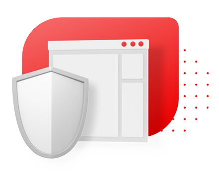
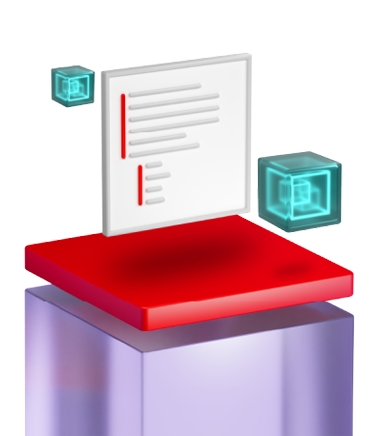

Image mode for Red Hat® Enterprise Linux® is a simple, consistent approach to building, deploying, and managing the operating system (OS) using container technologies.
Now available on Red Hat Enterprise Linux 9.6 and 10.


Limit drift and anomaliesImage mode addresses the challenge of drift by helping keep your servers’ configurations the same, eliminating deviations that can lead to system instability and security risks. With image-level updates, changes can be deployed, even across major releases, or rolled back without using external snapshots should issues arise. Together, this results in less time spent troubleshooting anomalies and shorter maintenance windows. |
|
 |
Reduce time to marketDeliver faster solutions using DevOps and continuous integration/continuous delivery (CI/CD), which now includes the OS. With image mode, you can:
|
Boost your security capabilitiesCombining read-only system software with read-write configuration directories, image mode reduces the attack surface of the OS. With image mode, you can use container-oriented security tools all the way down at the OS level. Registry scanning and container signing now extends to cover both applications and the OS. Base images also include a software bill of materials (SBOM) to help users track and enhance their software supply chain across their environment. Regardless of how you choose to build your image, image mode can help you simplify your compliance requirements by applying the same security hardening profiles (including STIG, PCI, and CIS) across your Red Hat Enterprise Linux systems. |
 |
|

|
Simplify appliance creationImage mode lets you easily combine your OS with whatever applications and drivers you want for faster development and delivery. You can put your entire solution in a container, regardless of it running on a dedicated piece of hardware, cloud provider, or a virtual machine (VM). Image mode will also work even if your application already uses containers or isn’t container-friendly. This means you can spend more time on developing your solution rather than last minute OS integration. |
The choice is yours with Red Hat Enterprise Linux 10. Image mode is a different method for deploying Red Hat Enterprise Linux, while package mode is the familiar install that has powered the enterprise for decades. Red Hat Enterprise Linux empowers organisations to select the approach that best suits their specific workloads and organisational needs.
| Package mode | Image mode | |
|---|---|---|
| Build | Image builder | Container tools |
| Update | Packages (dnf) | Images (bootc) |
| Distribute | rpm repository | Container registry |
| Change | Run time (dnf) | Build time |
| Manage | Red Hat Lightspeed (formerly Red Hat Insights), Red Hat Satellite, and Red Hat Ansible® Automation Platform | |
| Deploy | Bare metal, VM, cloud, edge | |